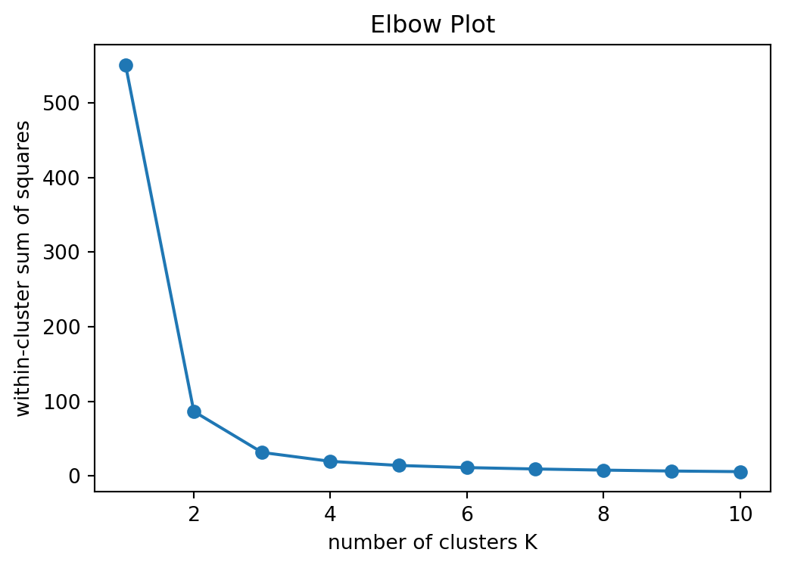
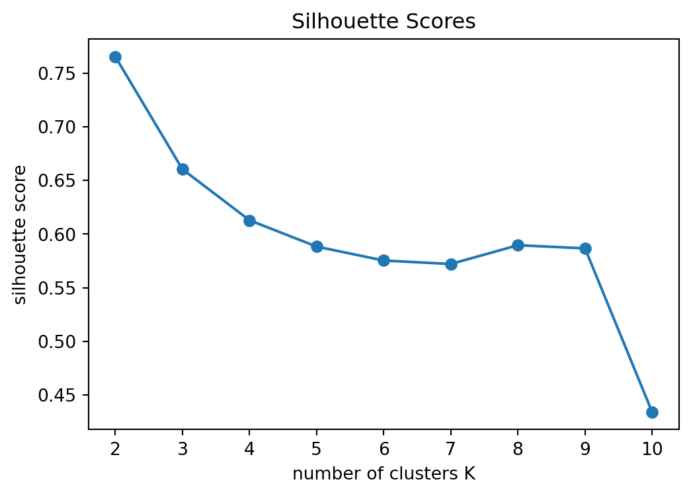
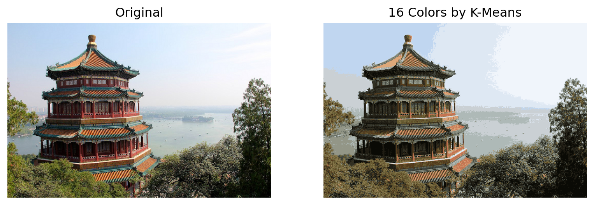

Clustering is an unsupervised learning task. Unlike regression or classification, there is no response variable \(Y\) used for training. We observe only the predictors
\[
x_1,\ldots,x_n,
\quad
x_i\in\mathbb R^p,
\]
and try to discover structure in the observations.
Typical goals include:
grouping similar observations,
summarizing complex data,
creating exploratory labels for later analysis,
finding structure that may suggest future supervised models.
CautionNo ground truth by default
In clustering, the labels are not given. If we color a plot by known classes, that is only for evaluation or illustration. The clustering algorithm itself does not use those labels.
This chapter focuses on two core clustering methods:
k-means clustering,
hierarchical clustering.
PCA is covered first in a separate chapter because it is often used before clustering for visualization and preprocessing. Spectral clustering, SOM, and UMAP are covered after this chapter as graph and embedding methods.
14.1 Scaling
Many clustering methods are based on distance. If variables have very different scales, variables with larger scales can dominate the result.
For example, age measured in years and income measured in dollars are not directly comparable. Standardization is often needed.
import numpy as npimport pandas as pdimport matplotlib.pyplot as pltfrom sklearn.preprocessing import StandardScalerX = np.array( [ [20, 30000], [25, 40000], [60, 120000], [65, 130000], ])scaler = StandardScaler()X_scaled = scaler.fit_transform(X)X_scaled
Standardization transforms each column to have mean 0 and standard deviation 1.
NotePractical rule
If variables are measured on different scales, standardize before clustering.
If all variables are already comparable, such as pixel intensities, standardization may not be necessary.
14.2 K-Means Clustering
K-means partitions observations into \(K\) clusters. The number of clusters \(K\) is chosen before fitting the model.
Let \(C(i)\in\{1,\ldots,K\}\) be the cluster assignment for observation \(i\), and let \(m_k\) be the center of cluster \(k\). K-means tries to minimize the within-cluster sum of squares:
Cluster labels are arbitrary. Cluster 0 does not have to correspond to species 0.
14.2.3 Choosing \(K\)
There is no universal rule for choosing \(K\). Two common diagnostics are the elbow plot and silhouette score.
The elbow plot shows inertia as a function of \(K\).
inertias = []k_values =range(1, 11)for k in k_values: model = KMeans(n_clusters=k, n_init=20, random_state=1) model.fit(X_iris) inertias.append(model.inertia_)plt.figure(figsize=(6, 4))plt.plot(k_values, inertias, marker="o")plt.xlabel("number of clusters K")plt.ylabel("within-cluster sum of squares")plt.title("Elbow Plot")plt.show()

The silhouette score measures how close observations are to their own cluster compared with other clusters. Larger values are better.
from sklearn.metrics import silhouette_scoresilhouette_values = []k_values =range(2, 11)for k in k_values: model = KMeans(n_clusters=k, n_init=20, random_state=1) labels = model.fit_predict(X_iris) silhouette_values.append(silhouette_score(X_iris, labels))plt.figure(figsize=(6, 4))plt.plot(k_values, silhouette_values, marker="o")plt.xlabel("number of clusters K")plt.ylabel("silhouette score")plt.title("Silhouette Scores")plt.show()

CautionChoosing \(K\)
Diagnostics help, but they do not replace subject-matter judgment. Different values of \(K\) may be useful for different scientific questions.
14.2.4 K-Means for Image Compression
A color image can be represented by RGB values. Each pixel is an observation with three features: red, green, and blue. K-means can reduce the number of colors by replacing each pixel with its cluster center.
The following example uses a sample image from sklearn.
from sklearn.datasets import load_sample_imagechina = load_sample_image("china.jpg")china = np.asarray(china, dtype=np.float64) /255w, h, d = china.shapepixels = china.reshape(-1, 3)pixels.shape
(273280, 3)
Fit k-means to a random subset of pixels, then predict all pixels.
fig, axs = plt.subplots(1, 2, figsize=(10, 5))axs[0].imshow(china)axs[0].set_title("Original")axs[0].axis("off")axs[1].imshow(compressed)axs[1].set_title("16 Colors by K-Means")axs[1].axis("off")plt.show()

Increasing the number of clusters gives better color resolution but less compression.
14.3 Hierarchical Clustering
Hierarchical clustering builds a tree of clusters, called a dendrogram. Unlike k-means, it does not require choosing the number of clusters before fitting.
Agglomerative hierarchical clustering starts with each observation as its own cluster. It then repeatedly merges the two closest clusters.
The key question is how to define distance between clusters.
Let \(G\) and \(H\) be two clusters.
14.3.1 Linkage Rules
Single linkage uses the closest pair:
\[
d(G,H)
=
\min_{i\in G,\;j\in H} d(x_i,x_j).
\]
Complete linkage uses the farthest pair:
\[
d(G,H)
=
\max_{i\in G,\;j\in H} d(x_i,x_j).
\]
Average linkage uses the average pairwise distance:
Single linkage can create long chain-like clusters. Complete and average linkage tend to produce more compact clusters. Ward linkage often behaves similarly to k-means because it is based on within-cluster variation.
14.4 Practical Workflow
A typical clustering analysis looks like this:
Choose variables carefully.
Standardize if variables are on different scales.
Visualize with PCA or another embedding method.
Try clustering methods such as k-means or hierarchical clustering.
Compare cluster stability under different tuning choices.
Interpret clusters using original variables.
After clustering, always return to the original features. A cluster label is only useful if we can understand what distinguishes the groups.
14.5 Summary
K-means:
minimizes within-cluster squared distance,
requires choosing \(K\),
works best for compact clusters.
Hierarchical clustering:
builds a dendrogram,
depends on linkage and distance choices,
allows cluster selection after fitting.
Clustering is exploratory. The algorithm can assign labels, but the analyst must decide whether the groups are meaningful.